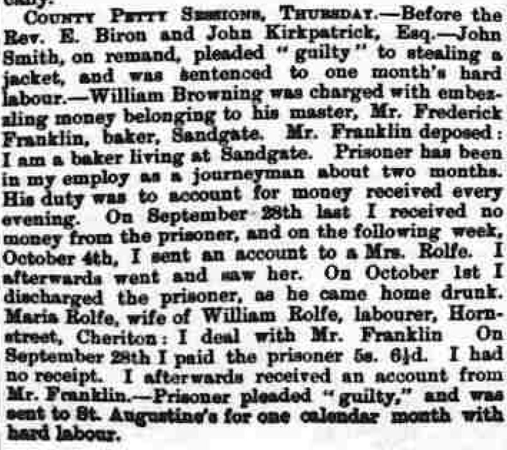
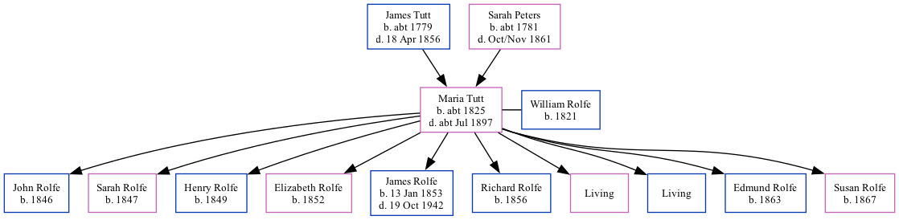

Maria Rolfe (née Tutt) c1825 - c1897
[ Home ] | [ Calendar ] | [ Surnames Index ] | [ Family History ]The child of James Tutt (a farm bailiff) and Sarah Peters (a nurse)Maria Tutt, the three times great-aunt of Nigel Horne, was born in Cheriton, Kent, England c. 18251,2,3, was baptized there at St Martin's Church on Mar 6, 1825 and married William Rolfe (an agricultural laborer with whom she had 10 children: John, Sarah, Henry, Elizabeth, James, Richard, Maria, William George, Edmund and Susan J, along with 2 surviving children) in Elham, Kent, England around Nov 18445.
Maria spent all of her life in Kent, England. Throughout her life, she lived in several places around the county: in Brookland, Kent, England on Jun 6, 18418; at Cheriton Street in Cheriton on Mar 30, 18511; at Horn Street in Cheriton on Apr 7, 18616 (when she was living with her mother, Sarah), in 18712 (the same place as her mother had been living on Apr 7, 1861), on Apr 2, 18712 and on Apr 3, 18813; and at Sandgate Road, Hythe on Apr 5, 18917.
She died c. Jul 1897 in Elham4 and was buried in Cheriton on Jul 4, 1897.
Parents
- James was born c. 1779
- Sarah was born c. 1781
Children
- John was born in 1846
- Sarah was born in 1847
- Henry was born in 1849
- Elizabeth was born in 1852
- James was born on Jan 13, 1853
- Richard was born in 1856
- Edmund was born in 1863
- Susan J was born in 1867
Citations
- 1851 England, Wales & Scotland Census - Findmypast (was age 26 and the wife of the head of the household)
- 1871 England, Wales & Scotland Census - Findmypast (was age 46 and the wife of the head of the household)
- 1881 England, Wales & Scotland Census - Findmypast (was age 56 and the wife of the head of the household)
- England & Wales deaths 1837-2007 - Findmypast
- England & Wales Marriages 1837-2005 - Findmypast
- 1861 England, Wales & Scotland Census - Findmypast (was age 37 and the wife of the head of the household)
- 1891 England, Wales & Scotland Census - Findmypast (was age 66 and a visitor in the household)
- 1841 England, Wales & Scotland Census - Findmypast (was age 17)
Media
Kentish Gazette October 17, 1871

England Births & Baptisms 1538-1975 - R_885430625
England & Wales marriages 1837-2005 - BMD/M/1844/4/AZ/000663/031
Kent Baptisms - GBPRS/CANT/B/96413971
1841 England, Wales & Scotland Census - GBC-1841-0014073465
1861 England, Wales & Scotland Census - GBC/1861/0003628531
1881 England, Wales & Scotland Census - GBC/1881/0004958463
1871 England, Wales & Scotland Census - GBC-1871-0014389468
1851 England, Wales & Scotland Census - GBC/1851/0005970053
England & Wales deaths 1837-2007 - BMD/D/1897/3/AZ/000318/263
1891 England, Wales & Scotland Census - GBC/1891/0006033109
Family Tree
Generated by ged2site. Last updated on Nov 13, 2024